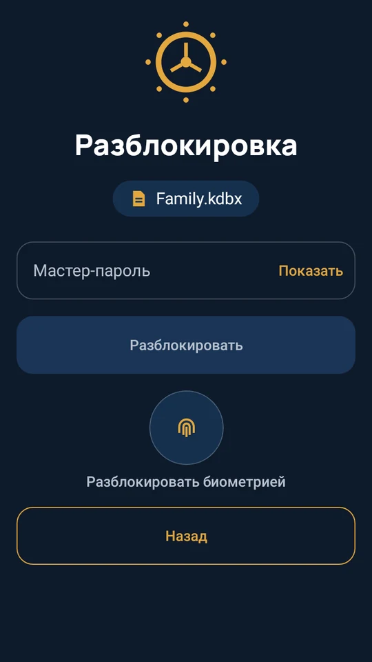
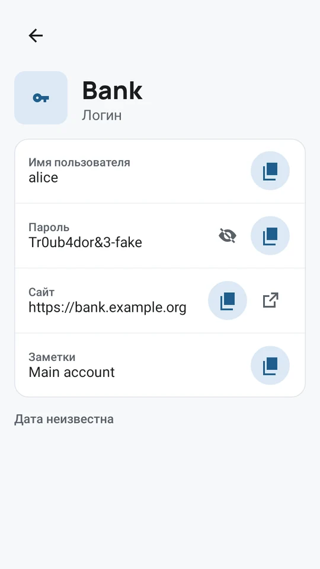
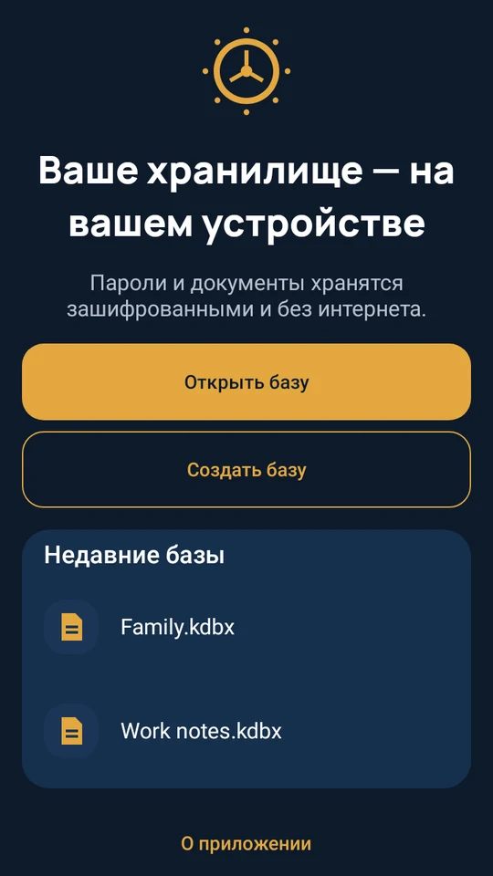

Паролям нужно место надёжнее, чем бумажка.
Храните все логины в одном зашифрованном сейфе на телефоне, открывайте его лицом или отпечатком — пароли подставятся сами. Без аккаунта и без доступа в интернет.
Загрузите вApp StoreДоступно вGoogle Play
Скоро для iPhone и Android.


